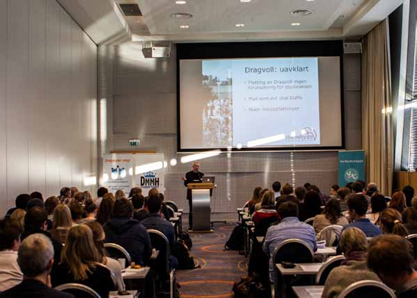

Planene om et felles sentrumsnært campus for NTNU ble i 2006 skrinlagt. En ny beslutning vil komme i 2014.
TEKST: Johannes Jakobsen
ojak@underdusken.no
FOTO: Mads Oftedal Schwencke

På grunn av plassmangel på Dragvoll
ble det i 2006 foreslått en éncampusløsning
for NTNU i områdene
rundt Gløshaugen. Planene ble
den gang avvist av NTNU. Nå har
dette forslaget igjen blitt aktuelt og
Kunnskapsdepartementet (KD) vil ha
en utredning klar før neste år
Samles for samlokalisering
Byens studentpolitikere møttes
22. januar på Rica Hotell i forbindelse
med Framtidskonferansen. Det
er en bred enighet blant dem om at de
ønsker et felles sentrumsnært campus.
Leder Simon Utseth Sandvåg ved
Studenttinget ved NTNU mener det er
en rekke fordeler med å flytte Dragvoll
ned til sentrum.
– Tverrfaglighet vil bli lettere og
det vil gjøre at de forskjellige studieretningene
kan få bedre kontakt med
hverandre. Dette vil styrke studiene og
ryktet til Trondheim som studentby,
sier han.
Ønsker å flytte Dragvoll Fungerende prosjektleder Anne Reinton for campusutvikling i Trondheim kommune er svært fornøyd med støtten fra studentene. – Vi har jobbet tett med studentene gjennom hele denne prosessen, så dette synes vi er veldig positivt, sier hun. I samarbeid med NTNU, Høgskolen i Sør-Trønderlag (HiST) og Studentsamskipnaden i Trondheim har hun over lengre tid jobbet med campusutvikling i Trondheim. Hun mener at flytting av Dragvoll er den mest framtidsrettede løsningen. – Det gir nærhet og tetthet, slik at det blir bedre muligheter for samarbeid på tvers av fakultetene. Å ha universitetet nærmere sentrum gjør at studentene kommer tettere på næringslivet, både privat og offentlig. Hun mener også at éncampusløsningen vil være bra for Trondheim som studentby. – Man tilrettelegger for en god studentkultur og godt byliv rundt universitetet, med Samfundet og studentboliger rundt. Dette fører igjen til at Trondheim blir en attraktiv by, som utvikler seg tett på universitetet, sier Reiton.
Å ha universitetet nærmere sentrum gjør at studentene kommer tettere på næringslivet.
Negativt for NTNU Professor Knut Holtan Sørensen ved Institutt for tverrfaglige kulturstudier ved NTNU stiller seg sterkt kritisk til samlokaliseringen. – Vi må regne med at et «samlokaliseringsprosjekt » vil medføre akutt mangel på areal for både NTNU og HiST i minst ti år framover. Et slikt prosjekt vil også medføre at NTNUs ledelse må bruke tid på arealplanlegging og flytting i stedet for faglig-strategisk utvikling. NTNU kommer til å bli et dårligere universitet fordi man må prioritere saker som er uvesentlige i sammenheng med forskning og høyere utdanning, sier han i et leserinnlegg til Universitetsavisa.
Nybygg utsatt
Etter at samlokaliseringsprosjektet ble
lagt ned i 2006, sendte NTNU inn en
søknad til KD om nybygg på Dragvoll.
I påvente av en beslutning om framtiden
til Dragvoll vil denne prosessen
trolig bli fryst.
Sandvåg ved Studenttinget støtter
samlokaliseringen med forbehold om
at prosessen skal være god.
– Er det ikke negativt å starte denne
prosessen når det er desperat mangel på plass
på Dragvoll?
– Det er en viss fare for det, men vi
har hele tiden sagt vi ikke kan stille oss
bak et slikt prosjekt hvis ikke løsningen
blir god. Dette er svært viktig for vårt
syn på saken, sier Sandvåg.
Utredning før 2014 24. januar ble det klart at KD nå vil gjennomføre en utredning. Rapporten skal være ferdig i desember i år, og en beslutning vil trolig komme i 2014. Komiteen som gjennomfører utredningen vil se på to mulige alternativer; en utbedring av anlegget på Dragvoll eller en éncampusløsning. – Vi er klar over tilstanden og behovet for rehabilitering og utvidelse av universitetsanlegget på Dragvoll, sier kunnskapsminister Kristin Halvorsen i en pressemelding. Ordfører Rita Ottervik i Trondheim kommune er svært fornøyd med KDs initiativ. – Dette er kjempegode nyheter, og et gjennombrudd i arbeidet mot én campus. Vi er sikre på at vi kan få til dette, sier hun til Dusken.no.